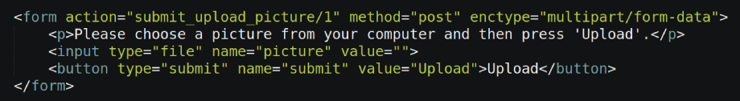
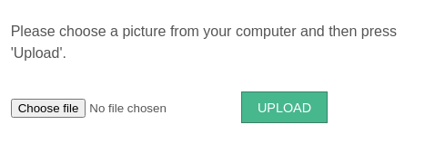

Whilst it's nice to have uploaders being generated automatically, it's important for Trongate to stand on its own - as a PHP framework - without the desktop app. It's also useful to understand how the uploader settings work for single picture uploaders. So, let's get into this!
Single picture uploaders are, broadly speaking, just ordinary forms - complete with submit buttons, form validation, validation errors, success messages and all of the usual things that you might expect when doing ordinary form building.
The image sample below shows an example of the kind of HTML required to produce a single picture uploader.

Below is an example of the kind of form that gets produced from the HTML code shown above.

Three things to notice from the code shown above are:
The process for building your our own single picture uploaders would be:
Like any HTML form, you're going to need a form location. So, you could start by declaring a form location. This is the destination where your form will be posted to. For example,
$target_module = segment(1);
$update_id = segment(3);
settype($update_id, "int");
$form_location = BASE_URL.$target_module."/submit_upload_picture/".$update_id;
You can see that the module/controller that will be dealing with uploading is taken from the first segment of the URL. The method that will be dedicated to processing the form submission will be called 'submit_upload_picture'. In this example, we've also read an update ID from the third segment of the URL. This update ID would represent the 'id' value from the record that is to receive a picture.
Next, let's create a form opening tag for our uploader. We can do this with:
echo form_open_upload($form_location);Now, we're going to add a form field that, when clicked, opens a popup window and lets the user choose an image from their computer. We can add this by calling Trongate's form_file_select() method:
echo form_file_select("picture");PLEASE NOTE: The form_file_select method accepts one argument - the name of the file-type input field. So, in the case of our example, form_file_select('picture') would produce the following HTML:
<input type="file" name="picture" value="">Now, we're going to finish off our form with a form submit button. We'll give our submit button a name of 'submit' and a value of 'Upload':
echo form_submit("submit", "Upload");echo form_close();So, let's put everything together. Here's our code for displaying an uploader form:
$target_module = segment(1);
$update_id = segment(3);
settype($update_id, "int");
$form_location = BASE_URL.$target_module."/submit_upload_picture/".$update_id;
echo form_open_upload($form_location);
echo form_file_select("picture");
echo form_submit("submit", "Upload");
echo form_close();
Of course, it may be a good idea to also add a helpful sentence so that your end-user knows what to do. For example:
<p>Please choose a picture from your computer and then press "Upload".</p>Before we get into the business of processing our form submissions, we have to declare some uploader settings, inside our controller file. These settings determine how our uploader will behave. When you use the desktop app to generate single picture uploaders, the uploader settings are contained within a method. For example:
function _init_picture_settings() {
$picture_settings["max_file_size"] = 2000;
$picture_settings["max_width"] = 1200;
$picture_settings["max_height"] = 1200;
$picture_settings["resized_max_width"] = 450;
$picture_settings["resized_max_height"] = 450;
$picture_settings["destination"] = "bands_pics";
$picture_settings["target_column_name"] = "picture";
$picture_settings["thumbnail_dir"] = "bands_pics_thumbnails";
$picture_settings["thumbnail_max_width"] = 120;
$picture_settings["thumbnail_max_height"] = 120;
return $picture_settings;
}What these settings mean will be described later on. For the moment, however, it's enough to simply copy the code above and paste it into your controller file.
Have a close look at the settings above and you'll notice that a 'destination' has been declared. In our example, the destination is 'band_pics'. Of course, you can call your destination anything you like - provided you avoid spaces and other potentially problematic characters. The 'destination' is the name of the directory where your pictures will be uploaded to.
Before you move forward, create your destination directory and add it inside your 'public' folder. Please note, you may have to change the permissions so that PHP is able to write files to your destination folder.
You can also see, in our code above, that we have a 'thumbnail_dir' declared. This is the folder where thumbnails would be stored. Thumbnails are optional, however, if you're planning on having thumbnails automatically generated then please ensure your thumbnail directory is also created and located inside your 'public' folder.
In this kind of situation, each picture that gets uploaded will be associated with a record on a database table. Before moving forward, go to your target database table (in this example our target table is called 'bands') and add a column called 'picture' (or some other appropriate name of your choosing). Your new database column should be a variable character (varchar) of 255 characters in length.
So, assuming:
...then it can only mean one thing - you're ready to write the code for processing form submissions. To process form submissions and ultimately upload pictures, we're going to create a 'submit upload' method. How the submit method works, is going to be covered in the next page.